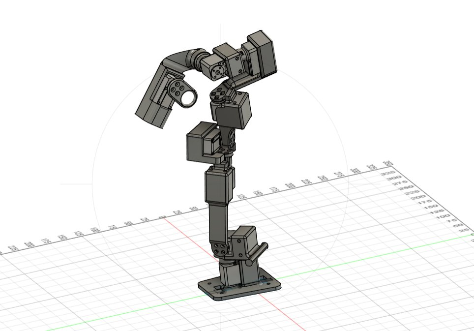

Robotic Teleoperation System
A GELLO-style passive leader arm that teleoperates an AgileX NERO 7-DOF robot. Seven joint angles are read straight off the servo bus and mapped to the follower with no inverse kinematics, for scalable imitation-learning data collection. The MuJoCo model was verified joint-for-joint against the manufacturer URDF.
Python · Feetech SDK · MuJoCo · ZMQ · Fusion 360
Private repository — code available on request